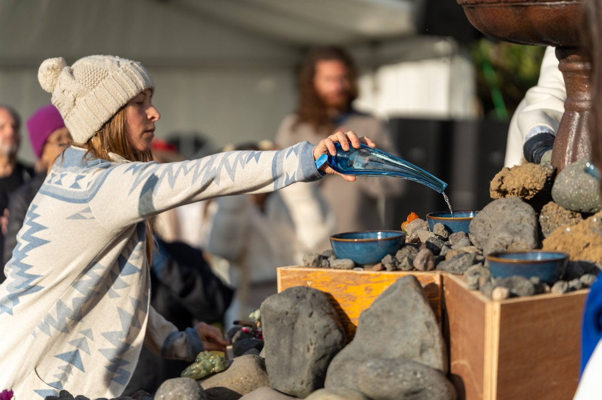
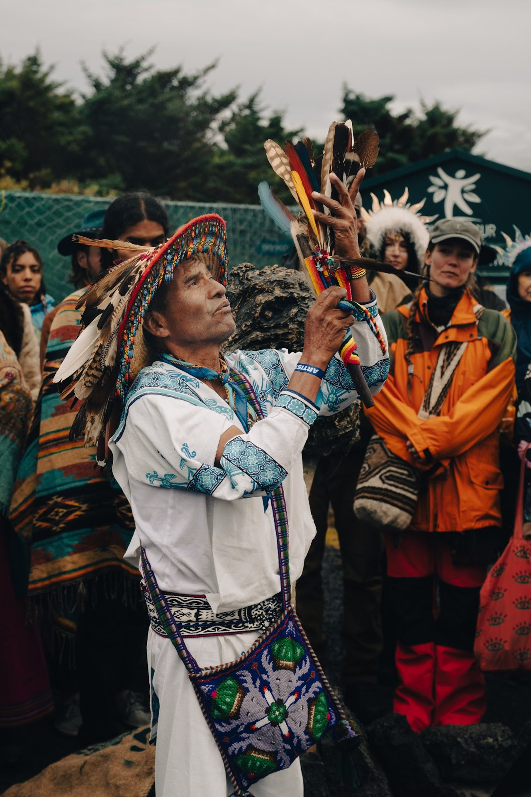
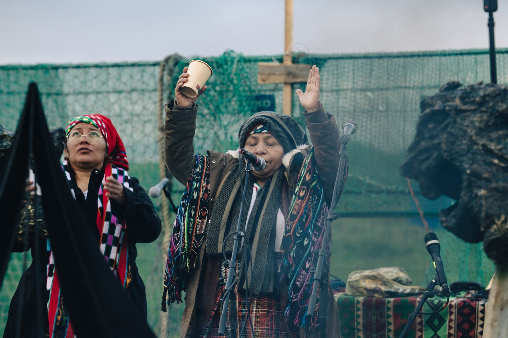

COHERENCE
A 4-day journey for change makers who believe and know we will triumph through our global challenges to create planetary paradise.
Four days on the river for the people who believe, and know, that humanity will triumph through its global challenges. We come together to connect, heal, and collaborate on the future of humanity: working on ourselves while we work on the world.
Music, ceremony, and collective action. One field.
A festival with real work at its center.
Part celebration, part ceremony, part summit. A curated gathering where the optimists of consciousness, technology, art, and regeneration come to enjoy life together and leave with real projects and businesses they can get involved in, building the world that is arriving.
What it is not
- A music festival with talks bolted on
- A transactional networking conference
- A doom-and-gloom debate about AI
- A crowd that disperses when it ends
What it is
- Connect with lifelong partners, personal and business
- Heal through ceremony, movement, water, and rest
- Collaborate on what we build for the post-AI world
- Celebrate with music, great food, and play
Four movements, every day.
Move
Yoga at 9, Daybreaker and Bass Church on the Amphitheater Stage. The body wakes up first.
Think
One keynote and panel a day on the day's theme, then a full hour to digest it over lunch in the Grove.
Go Inward
An afternoon ceremony in the Ceremony Garden, with the day's deep transformational practice woven in.
Celebrate
Dinner together, then music on the river until midnight. AWARË, Poranguí, Snow Raven, MOSE.
The world's top optimists, in one place.
Contemplatives
- Meditators and spiritual teachers
- Consciousness researchers
- Healers and somatic practitioners
- Ceremony holders
Technologists
- AI researchers and founders
- Engineers building the systems
- Biohackers and longevity builders
- Crypto and open-finance builders
Creatives
- Musicians and artists
- Designers and storytellers
- Filmmakers and media
- Culture makers
Stewards
- Venture and impact funds
- Policy and political leaders
- Water protectors and regenerators
- Community organizers
What will humans do when goods and services are nearly free?
AI is arriving faster than our institutions can adapt. We believe it can be the best thing that ever happened to humanity, if we decide what it is for. More time with family. More creativity. More connection, celebration, play, and nature. COHERENCE is where we predict what is coming and start building the places people will land.
Carson Creek Ranch.
- 60 acres on the banks of the Colorado River, in Austin
- A Texas Century Ranch, worked by the same family for 150 years
- Amphitheater Stage on the water, under old pecans: music, yoga, keynotes
- Ceremony Garden for the daily ceremonies and deep practice
- The Grove: a river trail of food, vendors, biohacking, lounges, and the Bath House
- Held on the Spring Equinox, through the Full Moon, closing on World Water Day
A destination gathering without the journey.
Most transformational gatherings ask for two travel days before anyone arrives. Carson Creek Ranch sits minutes from downtown Austin and Austin-Bergstrom International, so a guest can land and be on the land the same hour. Lower friction, higher conversion, national reach.
One theme a day. One arc across four.
Opening
Land, find your people in the Grove. Opening Ceremony at 6, dinner, then AWARË opens the music on the river.
Consciousness in AI
Daybreaker at dawn. Keynote & panel on building conscious machines. Illumination of the AI Systems. Poranguí headlines.
Consciousness in Financial & Political Systems
Bass Church. Founders, funds and organizers on the systems we are ready to redesign. Illumination ceremony. Snow Raven, then MOSE.
The Consciousness of Water
A slow day: yoga, the Bath House, a guided water cleanse. Keynote & panel beside the Colorado, the World Water Day Ceremony, a closing dance.
Three layers, three stages.
Keynotes & Panels
One a day, on the day's theme: consciousness in AI, in financial and political systems, and in water. Built to land concrete ideas, not just talk.
Ceremonies
Opening, two Illuminations, and the World Water Day Ceremony, each with the day's deep transformational practice inside it.
Music
AWARË, Daybreaker, Bass Church, Poranguí, Snow Raven, MOSE, and a closing dance under the full moon.
We leave with a plan,
and with each other.
Concrete, not abstract
- Each keynote & panel ends with proposals, not applause
- What people will do with their time after AI
- What we can build now so they have a place to land
Consciousness inside the machine
- An honest look at infusing AI with enlightened principles
- Financial and political systems redesigned in the open
- Water as the model for how systems should flow
Partners for life
- Business partners, creative partners, life partners
- Meals, ceremony, and the Bath House do the introductions
- A community that keeps building after Monday
Produced by IMXP & UNIFY.
COHERENCE brings together IMXP and UNIFY: collaborators who have already worked side by side at Texas Eclipse and Iceland Eclipse, bringing ceremony to scale across two of the decade’s most significant celestial gatherings. The event playbook, the speaker network, and the community platform already exist.



COHERENCE
Come together to connect, heal, and collaborate
on the future of humanity.